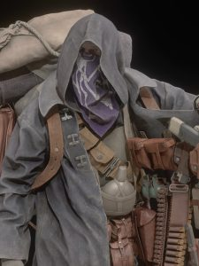

O Mercador
O Mercador é um personagem enigmático e icônico da série Resident Evil, especialmente conhecido por sua presença em Resident Evil 4. Ele é um vendedor ambulante que oferece uma variedade de armas, munições e itens úteis para o protagonista Leon S. Kennedy durante sua missão de resgate. O Mercador é reconhecível por sua aparência distinta, usando um capuz e uma máscara que cobre seu rosto, além de carregar uma grande mochila cheia de mercadorias. Sua personalidade é misteriosa, e ele frequentemente faz comentários sarcásticos e enigmáticos. Apesar de sua natureza excêntrica, o Mercador desempenha um papel crucial no jogo, ajudando os jogadores a se prepararem para os desafios que enfrentam ao longo da história.